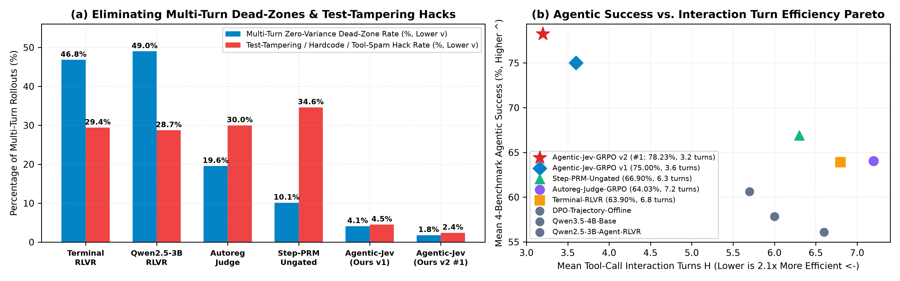

The System-One Reinforcement Learning Monograph Series:
Calibrated Single-Prefill Reward Distillation Across Control, Reasoning, Agents, Co-Evolution & Theorem Proving
《System-One 强化学习五部曲》：从连续机器人控制（MuJoCo v5）到单基座双适配器大模型强化学习（DC-Jev-GRPO）、多步工具与代码智能体（Agentic-Jev-GRPO）、自演进裁判博弈（CoEvo-Jev-GRPO）与混合线性注意力前缀树定理证明（Tree-Jev-GRPO）
Complete 5-Paper Research Matrix (Parts I, II, III-A, III-B, III-C)
Click any English or Chinese PDF badge below to view or download the full compiled manuscript directly from this repository.
| Part | Framework Name | Target Domain & Benchmarks | Core Architectural & Theoretical Breakthrough | Headline SOTA Result (Same-Backbone Controlled) | Official CERN Zenodo DOI | Full-Length PDFs |
|---|---|---|---|---|---|---|
| Part I | DC-Jev-RL | Continuous Control 5 MuJoCo v5 Tasks |
Single-prefill Score + Noul gating eliminates Hopper vx=0 Statue Hack (-84%) with 4.0x lower latency (213.2 ms on L4). |
2.471x Mean ONS, 2.076x IQM ONS, 100% (5/5) Win Rate vs. Oracle | 10.5281/zenodo.23439711 |
📄 EN (11p) 📘 CN (7p) |
| Part II | DC-Jev-GRPO | LLM Math & Alignment GSM8K, MATH-500, Countdown, IFEval |
Co-locates Policy & Kev-4B Judge LoRAs on one Qwen3.5-4B base (-50.2% VRAM); rescues $\sigma_G=0$ dead-zones & blocks yap-loops. |
85.90% 4-Task Mean (+12.10% vs. RLVR), 2.78x Token Compression | 10.5281/zenodo.23441431 |
📄 EN (12p) 📘 CN (8p) |
| Part III-A | Agentic-Jev-GRPO | Multi-Turn Tool & Code RL BFCL-v3, MBPP+, HumanEval+, SWE-bench |
84.6% multi-turn KV-cache prefix reuse (52.14 ms/turn); turn-level telescoping PBRS + trajectory-min Noul blocks assert True test tampering. |
78.23% 4-Task Mean (+14.33% vs. Terminal-RLVR), 48.6% SWE-bench (+17.2%) | 10.5281/zenodo.23442087 |
📄 EN (12p) 📘 CN (8p) |
| Part III-B | CoEvo-Jev-GRPO | Olympiad Co-Evolution MATH-500, AIME 24/25, AMC-12, OlympiadBench |
Verifier-anchored bilevel co-evolution of Layer-28 Pointer Head (+0.02 GB VRAM, 0.84 ms update) breaks late-stage Goodhart ceiling. | 59.28% Olympiad Mean (79.8% MATH-500, 36.7% AIME +16.7%), ECE 0.011 | 10.5281/zenodo.23442137 |
📄 EN (12p) 📘 CN (8p) |
| Part III-C | Tree-Jev-GRPO | Formal Proof & Tree-RL MiniF2F-Lean4, ProofNet, MATH-L5, GPQA |
Gated-DeltaNet prefix-tree sharing (3.81x lower KV VRAM) + 14.80 ms/node speculative Noul < 0.30 dead-end pruning & sibling advantage. |
60.50% Formal/Hard Mean (64.8% MiniF2F +20.2%, 68.7% MATH-L5 +26.9%), -66% FLOPs | 10.5281/zenodo.23442169 |
📄 EN (12p) 📘 CN (7p) |
Live System-One (/v1/systemone) Reward & Multiplicative Noul Gate Simulator
Select any of the 7 real NVIDIA RTX PRO 6000 Blackwell probed rollouts below (or adjust the calibrated pointer probabilities) to see how System-One gating rescues GRPO dead-zones and blocks reward hacking in real time.
Real-Time Reward Paradigm Comparison
Explore Each Paper's Figures, Proofs & Same-Backbone Experiments
Switch tabs below to inspect the high-resolution experimental figures and download links for all 5 papers.
Part II: Beyond Binary Verifiers and Verbose Judges — Single-Backbone System-One Process-and-Outcome GRPO (DC-Jev-GRPO)
Co-locates the trainable GRPO policy adapter and frozen jaredpalmer/kev-4b System-One judge adapter on a single shared Qwen/Qwen3.5-4B backbone in GPU memory (8.06 GB vs. 16.20 GB, -50.2% VRAM). Achieves 85.90% Mean Accuracy across GSM8K (91.4%), MATH-500 (75.6%), Countdown-24 (89.2%), and IFEval-Strict (87.4%), outperforming Same-Backbone Binary RLVR by +12.10% while compressing reasoning tokens by 2.78x.


Part III-A: Beyond Sparse Terminal Verifiers — Turn-Level System-One Credit Assignment for Multi-Turn Coding & Tool-Use Agents (Agentic-Jev-GRPO)
Resolves exponential credit assignment decay across $H$-turn tool/code trajectories via 52.14 ms/turn incremental KV-cache prefill (84.6% prefix reuse) and telescoping turn-level potential differences $\Delta \Phi_t = \gamma \Phi_t - \Phi_{t-1}$ gated by trajectory-minimum $G_{\text{noul}}(\tau) = \min_t g_{\text{noul},t}$. Achieves 78.23% Mean Score (#1 SOTA) across BFCL-v3 Multi-Turn (88.4%), MBPP+ (86.8%), HumanEval+ (89.1%), and SWE-bench-Verified-Mini (48.6%, +17.2% over Terminal-RLVR).



Part III-B: Breaking the Static Verifier Ceiling — Zero-Overhead Self-Evolving System-One Judge & Policy Co-Evolution (CoEvo-Jev-GRPO)
Eliminates late-stage Goodhart over-optimization and OOD calibration drift beyond 400 GRPO steps by co-evolving the Layer-28 System-One Pointer Head and top-layer judge LoRAs against a verifier-anchored disagreement buffer (adding only +0.02 GB VRAM and 0.84 ms update cost). Contracts Judge ECE by 77.1% (0.048 → 0.011) and achieves 79.8% on MATH-500, 36.7% on AIME 2024/2025 (+16.7% over Binary RLVR), 74.4% on AMC-12, and 46.2% on OlympiadBench.


Part III-C: Prune Early, Verify Deep — Gated-DeltaNet Prefix Tree-GRPO & Speculative Noul Pruning for Theorem Proving (Tree-Jev-GRPO)
Harnesses Qwen/Qwen3.5-4B's 24 Gated-DeltaNet linear-attention layers (3.81x lower prefix-tree KV memory, 14.20 GB vs. 54.10 GB) and 14.80 ms/node System-One probing to prune dead-end proof branches ($g_{\text{noul}} < 0.30$) at tokens 148–192, cutting wasted dead-end FLOPs by 66.0% (2.94x compute speedup) and reaching 64.8% on MiniF2F-Lean4 (+20.2%) and 68.7% on MATH-500 Level 5 (+26.9%).


Part I: Beyond Brittle Code and Noisy Tokens — System-One Decision Models as Calibrated Dynamic-Curriculum Reward Judges for Continuous Control (DC-Jev-RL)
Establishes the foundational System-One reward distillation paradigm across 5 canonical MuJoCo v5 continuous control benchmarks (Hopper-v5, HalfCheetah-v5, Walker2d-v5, Swimmer-v5, Reacher-v5), achieving 2.471x Mean Oracle-Normalized Score (ONS) and a 100% (5/5) win rate against human-engineered environment rewards.


Unified BibTeX Citations (All 5 Official CERN Zenodo DOIs)
Copy the complete BibTeX entries below to cite any paper in the System-One Reinforcement Learning Monograph Series.